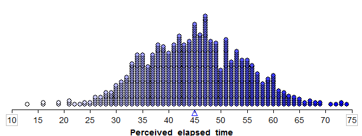

Chapter 5¶
As seen in Chapters 1-3, research hypotheses involving either a single categorical variable or two categorical variables require us to test claims about proportions. When a research question involves a single numerical variable, however, we typically end up testing claims about the mean, or average. In this chapter, we will consider inferential methods (hypothesis tests and confidence intervals) for the mean of a single numerical variable. Consider the following example.
Example 5.1: A study conducted by researchers at Pennsylvania State University investigated whether time perception, a simple indication of a person’s ability to concentrate, is impaired during nicotine withdrawal. The study results were presented in the paper “Smoking Abstinence Impairs Time Estimation Accuracy in Cigarette Smokers” (Psychopharmacology Bulletin [2003]: 90-95). After a 24-hour smoking abstinence, 20 smokers were asked to estimate how much time had passed during a 45-second period. Suppose the resulting data on perceived elapsed time (in seconds) were analyzed as shown below (these results are artificial but are similar to the actual findings). The data can be found in the file Nicotine1.JMP.
** **We can use JMP to summarize the data as follows:
Questions:
What is the mean of the observed data? The standard deviation?
- If another sample of n=20 subjects were obtained, would these new
subjects have a mean exactly the same as the mean from this sample? Why or why not?
- Given your answer to the previous question, do you think it is
appropriate to use only this sample mean to make inferences about the mean perceived elapsed time in the greater population of all smokers subjected to nicotine withdrawal? Explain.
*THE DISTRIBUTION OF THE SAMPLE MEAN*
The sample mean is a random quantity; that is, it changes from sample to sample. Therefore, the sample mean actually has its own distribution. This distribution will tell us two things:
- What values the sample mean can assume.
- How often it will assume these values.
This distribution is referred to as the distribution of the sample mean. An understanding of this distribution allows us to make decisions about a population mean for a single numerical variable.
*Exploring the Distribution of the Sample Mean*
Before we discuss the procedure for inference, let’s consider the next example to gain a better understanding of how the distribution of sample means works and how we use this distribution to make a decision concerning our research question.
Example 5.2: Another “simulation study”….
Suppose we set up a hypothetical population of smokers suffering from nicotine withdrawal. This population has been purposefully created so that the mean perceived elapsed time is exactly 45 seconds.
In this simulation study, what is our value of μ, the true population mean?
Note that in reality, the true population mean is usually an unknown quantity which we are trying to estimate. Since it is not feasible to collect data on the entire population of smokers suffering from nicotine withdrawal, the researchers took a random sample of 20 subjects in order to estimate the average perceived elapsed time. Let’s see what happens when we take various samples of size 20 from this population.
We can use Tinkerplots to carry out this simulation. Each of the elements in the mixer represents the perceived elapsed time for a smoker suffering from nicotine withdrawal in the population (e.g., the highlighted subject thought that 50 seconds had passed during a 45-second period). We set the repeat value to 20 in order to randomly select 20 subjects from the population for our study.
Click Run to randomly select our first sample of 20 subjects, and we can then create a plot of their perceived elapsed times. Note that the mean of these 20 subjects is shown on this plot.
Questions*:
- What is the average (or mean) perceived elapsed time of the 20 subjects in this study?
- Does this necessarily mean that the average perceived elapsed time is greater than 45 seconds for all smokers suffering from nicotine withdrawal? What would you say to a researcher who tried to use only this sample mean to draw this conclusion?
Sample #3:
We can start to collect these sample means in a new plot to create the distribution of sample means:
To get a really good idea of what values are likely to occur by chance when taking random samples of size 20 from the population, we should take more than just three samples. The graphic below shows the process we used to create the distribution of sample means and the final plot of the means of 1,000 random samples.
This is a distribution of sample means. Recall that these 1,000 samples (each consisting of 20 subjects) came from a population with a true mean perceived elapsed time of 45 seconds. So, this distribution gives us a good idea of what sample means from 20 subjects are likely (or unlikely) to occur by chance if the true mean is 45 seconds.
Note that the distribution of sample means was created assuming the null hypothesis is true. To test this hypothesis, we compare our actual observed mean to this null model. If the sample mean from the actual research study is not likely to occur by chance according to this null model (i.e., if it is an outlier on this null model), then we have evidence against the null model and in support of the research question.
Recall that in the actual research study, the mean perceived elapsed time for the 20 subjects studied was 55.05 seconds. Sketch this observed value on the null model:
There are two explanations for this observed mean of 55.05 seconds: either (1) the true mean perceived elapsed time for smokers suffering from nicotine withdrawal really is greater than 45 seconds, or (2) their time perception is not impaired (i.e., the true mean is actually 45 seconds) and the sample mean was greater than 45 seconds simply because of random chance.
Questions:
- Was a sample mean of 55.05 seconds likely to occur by chance if the true population mean is actually 45 seconds? What does this imply about the research question?
- Give an approximate p-value based on this simulation study.
***¶
*THE CENTRAL LIMIT THEOREM*
Note that a statistician would not necessarily carry out a simulation study such as this to answer a research question. Instead, one could use a “short-cut” known as a t-test to investigate a research question concerning a single population mean. This short-cut is a result of something known as the central limit theorem, which states the following:
Consider a random sample of n observations from ANY population with mean µ and standard deviation σ. The distribution of sample means will have a mean of µ and a standard deviation of . When n (the number of subjects in the sample) is sufficiently large, this distribution will be approximately NORMAL; moreover, this approximation gets better as the sample size (n) increases.
We can see the Central Limit Theorem applied to the sample means calculated from our hypothetical population from Example 5.2 as follows:
- We see that this normal distribution is centered at the true population mean, µ = 45.
- The standard deviation of all observations in our hypothetical population is σ = 9.4 seconds. According to the central limit theorem, then, the standard deviation of the distribution of sample means is given by
- We see that the distribution of sample means is approximately normal.
Finally, recall from the previous chapter that given the mean and standard deviation of a distribution, we can determine whether a given observation is an outlier or not based on its position on this distribution. This will help us decide whether the sample mean actually observed in the research study is an outlier on the distribution that assumes the null hypothesis is true.
The only question that remains is this: How large does n (the number of subjects in a study) have to be in order for us to use the short-cut provided by the Central Limit Theorem?
Question*: How large does n have to be?* *
- If the original population is normally distributed, then the sampling
distribution of the mean will also be normally distributed even if the sample size n is very small (verify this using Tinkerplots as shown in class).
Distribution of the Population: |
Distribution of Sample Means when n = 2: |
|---|---|
- The more skewed the distribution, the larger the sample size must be
before the normal approximation fits the distribution of sample means well.
Distribution of the Population: |
Distribution of Sample Means when n = 2: |
|---|---|
| Distribution of the Population: | Distribution of Sample Means when n = 10: |
| Distribution of the Population: | Distribution of Sample Means when n = 20: |
| Distribution of the Population: | Distribution of Sample Means when n = 30:
|

{kind=link}
{kind=link}
{kind=link}
{kind=link}
{kind=link}
{kind=link}
{kind=link}
{kind=link}
{kind=link}
{kind=link}
{kind=link}
{kind=link}
{kind=link}
{kind=link}
{kind=link}
{kind=link}
- For almost all populations, samples of size n ≥ 30 or 40 subjects
will be sufficient to say that the distribution of sample means is approximately normal. However, if the distribution is very skewed, the sample size may have to be much larger than 30 in order for the central limit theorem to apply.
In summary, we can use the Central Limit Theorem to help us create a procedure for comparing a population mean to some hypothesized value. This works because:
- We know the distribution of sample means will be approximately normal if either (i) the original population is normally distributed, or (ii) our sample size is sufficiently large.
- We know the distribution of sample means will be centered at the true population mean (which we can set to some hypothesized value in the null hypothesis).
- We know that the variability in the distribution of sample means is given by (i.e., the variability decreases as the sample size gets larger, which we can see in the above examples).
In the next section, we put all of the pieces together to create what is known as the t-test.
* THE T-TEST FOR A SINGLE POPULATION MEAN *
Back to Example 5.1: Recall that the researchers wanted to show that the mean perceived elapsed time for smokers suffering from nicotine withdrawal was greater than the actual 45 seconds that had elapsed. The data collected in the study were summarized as follows:
*Step 1: Set up the null and alternative hypotheses*
Ho:
Ha:
*Step 2: Find the t-statistic and the p-value*
To determine whether or not the distance between µ (the hypothesized population mean) and (the mean from our observed sample) is larger than what we would expect by random chance, we will use the following statistic:
=
Why use this statistic? Because this quantity measures the position of our observed sample mean on the null model, just like the Z-score discussed in the previous chapter.
Note that this is very much like the Z-score, with one minor exception. We don’t know the true population standard deviation, σ, so we estimate it with the standard deviation calculated from the 20 observed subjects in the study (this estimate is commonly denoted by s).
This t-statistic comes from what is called a t-distribution. The amount of variability in a t-distribution depends on the sample size n (the greater the sample size, the smaller the standard deviation of the distribution of sample means). Therefore, this distribution is indexed by its degrees of freedom (df).
For inference on a single mean, df = n - 1.
To find the p-value associated with this test statistic, we must remember that this is an upper-tailed test (we are trying to find evidence that the mean is greater than 45 seconds). So, the p-value will be the probability we would observe a sample mean (or a t-statistic) greater than that obtained in the actual study by chance alone, assuming the null hypothesis is true:
{kind=link}
To obtain this p-value from JMP, go to the output displaying the distribution of perceived elapsed time, click on the red drop-down arrow next to the variable name, and select Test Mean.
{kind=link}

*Step 3: Write a conclusion in the context of the problem*
***¶
* Checking the Normality Assumption*:
For the t-test to be valid, at least one of the following conditions must be met:
- Either the sample size is sufficiently large (greater than 30 or so), or
- The distribution of the observed data is approximately normal (which would indicate that the population is normally distributed so that the Central Limit Theorem would apply even with a small sample size)
{kind=link}
We can also use JMP to create a normal quantile plot. To do this, select this option from the red drop-down arrow next to the variable name.

**¶
** Example 5.3:** For the data given in Example 5.1, we found evidence that the mean perceived elapsed was in fact greater than the actual 45 seconds that had elapsed. This study alone, however, doesn’t really prove that the nicotine withdrawal was what impaired one’s perception of time. Why not?
{kind=link}
Research Question: Is there evidence the mean perceived elapsed time for all smokers not suffering from nicotine withdrawal is significantly greater than the actual 45 seconds?
Ho:
Ha:
* Step 2: Find the t-statistic and the p-value*
=
Finding the p-value:
{kind=link}
***¶
* Checking the Normality Assumption*:
For the t-test to be valid, at least one of the following conditions must be met:
- Either the sample size is sufficiently large (greater than 30 or so), or
- The distribution of the observed data is approximately normal (which would indicate that the population is normally distributed so that the Central Limit Theorem would apply even with a small sample size)
Once again, since the sample size is fairly small, we must check to see if the data are approximately normal:
{kind=link}
{kind=link}
* NONPARAMETRIC TESTS: THE WILCOXON SIGNED RANK TEST*
When problems with normality in the data are present, there exists an alternative to the standard t-test: the Wilcoxon Signed Rank test. This procedure does not require that the data be normally distributed; however, THE DATA SHOULD BE SYMMETRIC IN ORDER FOR THIS PROCEDURE TO BE APPROPRIATE.
{kind=link}

***¶
* CONFIDENCE INTERVAL FOR A SINGLE POPULATION MEAN*
In Example 5.1, we found evidence that the mean perceived elapsed time for smokers suffering from nicotine withdrawal significantly differed from the actual 45 seconds of time that had elapsed. Our next question is obvious: HOW MUCH does it differ? To answer this question, we must construct a confidence interval.
Recall our discussion of confidence intervals from earlier in the semester:
This procedure does NOT require any hypotheses concerning our population parameter of interest (the mean, in this case). We will use both our sample data (in particular, the observed mean) and what we know about the distribution of sample means to obtain a range of likely values for our population mean.
Comments:
- A confidence interval allows us to estimate the population parameter
of interest (recall that the hypothesis test does NOT allow us to do this). Therefore, when available, a confidence interval should always accompany the hypothesis test.
- The confidence interval does not require any hypothesized value for
the population parameter. Instead, we center the confidence interval on the sample mean. Consider the following example.
Example 5.4: Our goal is to construct a 95% confidence interval for the mean perceived elapsed time for smokers suffering from nicotine withdrawal. To do this, we will center our distribution of sample means on the observed mean. Then, we will find the lower and upper endpoints that separate the middle 95% of the distribution from the rest (since we are constructing a 95% confidence interval).
{kind=link}
The formula for calculating the endpoints of this confidence interval is given as follows:
The appropriate t-quantile can be found using JMP. To find this value, you need the following information:
- confidence level =
- df =
{kind=link}
{kind=link}
Use this information to find the endpoints of the confidence interval:
Lower endpoint: =
Upper endpoint: =
Note that JMP automatically provides the endpoints of the 95% confidence interval for this mean when you analyze the distribution of the variable of interest.
Questions:
- Interpret the meaning of this interval. What does this interval tell us about the true mean perceived elapsed time for all smokers that are suffering from nicotine withdrawal?
- Does this interval agree with what you learned from the hypothesis test? Explain.
- How would your calculations change if you wanted to obtain a 90% confidence interval, instead?
***¶
* More on the Interpretation of Confidence Intervals*
The 95% refers to the process of constructing the confidence interval. This means that if we were to take many samples of size 20 from the population, constructing a confidence interval each time, we would expect 95% of them to capture the true population mean. Consider the following example:
** Example 5.5:** Our goal is to take samples from a population in order to estimate the true population mean. Shown below are 10 random samples of size n = 5. Construct a confidence interval for each of the samples.
| Sample ID | Data from Sample | Sample Statistics | 90% Confidence Interval |
|---|---|---|---|
| 1 | 12.49983 11.4342 8.210933 7.373925 8.776002 |
Mean 9.65898 Std Dev 2.19771 |
|
| 2 | 5.655407 8.903349 12.98215 10.22548 6.172528 |
Mean 8.78778 Std Dev 3.01349 |
|
| 3 | 8.181802 12.08606 6.176875 5.556382 5.822172 |
Mean 7.56466 Std Dev 2.73035 |
|
| 4 | 13.19405 5.122735 2.469639 7.373925 6.401793 |
Mean 6.91243 Std Dev 3.96465 |
|
| 5 | 9.293009 10.52984 7.260893 10.50763 7.431728 |
Mean 9.00462 Std Dev 1.59555 |
|
| 6 | 9.303573 2.354969 8.811873 17.06401 10.45554 |
Mean 9.59799 Std Dev 5.23552 |
|
| 7 | 10.91127 8.023941 8.432168 14.17466 8.603912 |
Mean 10.02919 Std Dev 2.57711 |
|
| 8 | 11.53353 5.782364 11.44628 10.61424 -1.68752 |
Mean 7.53778 Std Dev 5.67659 |
|
| 9 | 8.197059 6.193274 9.114461 6.290799 9.661013 |
Mean 7.89132 Std Dev 1.59424 |
|
| 10 | 6.53196 12.08221 6.81856 13.46314 9.183324 |
Mean 9.61584 Std Dev 3.09866 |
A graphical representation of the intervals is presented below:
{kind=link}
Questions:
- Why are some of the 90% confidence intervals wider than others?
- In truth, these 10 random samples were generated from a population with a mean of 10. How many of the confidence intervals captured this true mean? What does it mean to say that we are 90% confident?